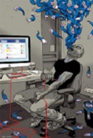

Introducción
La tecnología se ha convertido en una parte fundamental de la vida diaria.
Los celulares, computadoras, videojuegos y redes sociales facilitan la
comunicación, el aprendizaje y el entretenimiento.
Sin embargo, el uso excesivo de estos dispositivos puede provocar una
adicción tecnológica. Esta problemática afecta la salud física, mental y
social de las personas, ya que muchas veces se pierde el control sobre el
tiempo que se dedica a internet o a los aparatos electrónicos.